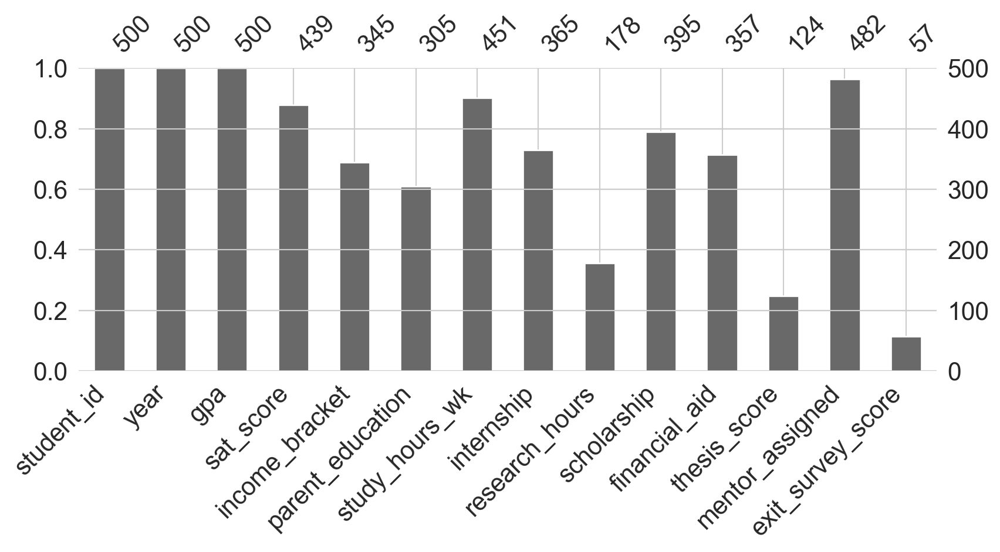
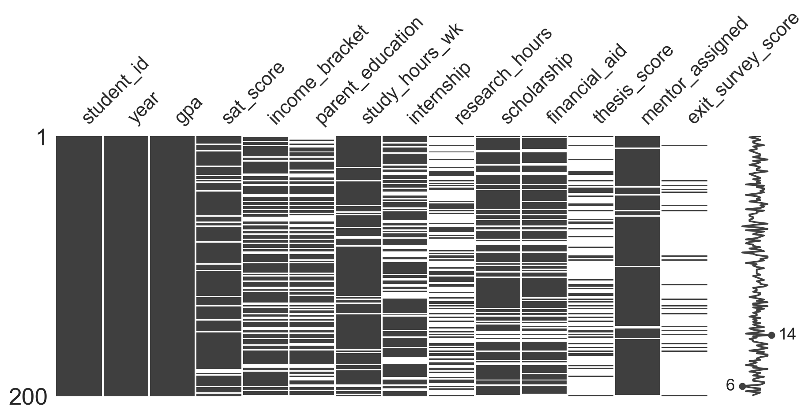
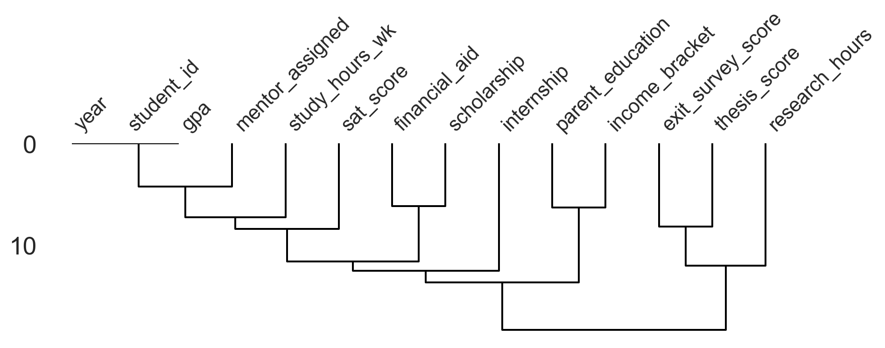

Libraries
import pandas as pd
import numpy as np
import missingno as msno
import matplotlib.pyplot as plt
import seaborn as sns
sns.set_style('whitegrid')
sns.set_palette('Set2')John Robin Inston
May 6, 2026
May 22, 2026
In the previous chapter we introduced the tidy data standard:
For data to be tidy it must satisfy the following three rules:
In practice, raw data almost never arrives in this form. Beyond structure, real datasets routinely contain:
Data preparation is the process of systematically identifying and resolving these problems before analysis.
Data preparation is the process of cleaning and transforming data to make it suitable for analysis.
The workflow for each problem follows the same pattern:
Missing data can arise for many reasons: a field was never collected, data was collected but subsequently lost, or a value was recorded incorrectly and then nullified. Understanding why data is missing is important because it determines what treatment is appropriate.
There are three standard classifications:
Missingness is often informative in its own right. A blank income field may mean the respondent preferred not to disclose it (biasing a sample toward lower earners). Missing follow-up appointments in a clinical trial may indicate patients who became too ill to return (biasing an efficacy estimate upward). Ignoring these patterns leads to biased analysis.
We will use a synthetic student academic records dataset throughout this section. It has enough columns and varied missingness patterns to illustrate the key tools.
rng = np.random.default_rng(42)
n = 500
year = rng.choice([1, 2, 3, 4], size=n, p=[0.25, 0.25, 0.25, 0.25])
gpa = rng.normal(3.0, 0.5, size=n).clip(0, 4.0)
# SAT score — missing for ~15% (some students sat the ACT instead)
sat = rng.integers(900, 1600, size=n).astype(float)
sat[rng.random(n) < 0.15] = np.nan
# Income bracket and parent education — sensitive fields, often missing together
income_mask = rng.random(n) < 0.30
parent_mask = income_mask | (rng.random(n) < 0.10)
income = pd.Series(rng.choice(["Low", "Middle", "High"], size=n), dtype=object)
parent_ed = pd.Series(rng.choice(["High School", "Some College", "Bachelor's", "Graduate"], size=n), dtype=object)
income[income_mask] = np.nan
parent_ed[parent_mask] = np.nan
study_hours = rng.integers(5, 40, size=n).astype(float)
study_hours[rng.random(n) < 0.10] = np.nan
internship = rng.choice([0, 1], size=n).astype(float)
internship[rng.random(n) < 0.25] = np.nan
# Research hours — mostly missing for first- and second-year students
research = rng.integers(0, 20, size=n).astype(float)
research[(year < 3) | (rng.random(n) < 0.30)] = np.nan
# Scholarship and financial aid — correlated missingness
scholarship_mask = rng.random(n) < 0.20
scholarship = rng.choice([0, 1], size=n).astype(float)
financial_aid = rng.integers(0, 20000, size=n).astype(float)
scholarship[scholarship_mask] = np.nan
financial_aid[scholarship_mask | (rng.random(n) < 0.10)] = np.nan
# Thesis score — only exists for year-4 students
thesis = rng.normal(75, 10, size=n).clip(0, 100)
thesis[year < 4] = np.nan
mentor = rng.choice([0, 1], size=n).astype(float)
mentor[rng.random(n) < 0.05] = np.nan
# Exit survey — only year-4 students, and only ~40% completed it
exit_survey = rng.integers(1, 10, size=n).astype(float)
exit_survey[(year < 4) | (rng.random(n) < 0.60)] = np.nan
students = pd.DataFrame({
'student_id': [f"S{str(i).zfill(4)}" for i in range(1, n + 1)],
'year': year,
'gpa': gpa,
'sat_score': sat,
'income_bracket': income,
'parent_education': parent_ed,
'study_hours_wk': study_hours,
'internship': internship,
'research_hours': research,
'scholarship': scholarship,
'financial_aid': financial_aid,
'thesis_score': thesis,
'mentor_assigned': mentor,
'exit_survey_score': exit_survey,
})The first step is to understand the scale of the problem.
| student_id | year | gpa | sat_score | income_bracket | parent_education | study_hours_wk | internship | research_hours | scholarship | financial_aid | thesis_score | mentor_assigned | exit_survey_score | |
|---|---|---|---|---|---|---|---|---|---|---|---|---|---|---|
| 0 | S0001 | 4 | 3.716607 | 1267.0 | NaN | NaN | 34.0 | 0.0 | NaN | NaN | NaN | 67.096113 | 1.0 | 8.0 |
| 1 | S0002 | 2 | 3.045760 | 1139.0 | NaN | NaN | 16.0 | 1.0 | NaN | 0.0 | 9065.0 | NaN | 1.0 | NaN |
| 2 | S0003 | 4 | 3.290389 | 1289.0 | Middle | Graduate | 7.0 | 0.0 | 13.0 | NaN | NaN | 74.403315 | 1.0 | 8.0 |
| 3 | S0004 | 3 | 2.971608 | 1024.0 | NaN | NaN | 12.0 | 1.0 | 5.0 | NaN | NaN | NaN | 1.0 | NaN |
| 4 | S0005 | 1 | 2.914796 | 963.0 | NaN | NaN | 22.0 | 1.0 | NaN | NaN | NaN | NaN | 1.0 | NaN |
We count missing values per column and compute an overall percentage.
exit_survey_score 443
thesis_score 376
research_hours 322
parent_education 195
income_bracket 155
financial_aid 143
internship 135
scholarship 105
sat_score 61
study_hours_wk 49
mentor_assigned 18
student_id 0
year 0
gpa 0
dtype: int64missingnoThe missingno library provides four complementary views of missing data patterns.
Bar chart — shows the count of non-null values per column at a glance.

Matrix — plots a random sample of rows; white streaks mark missing entries. Aligned streaks across columns indicate that variables are missing together.

Heatmap — shows the correlation between missingness indicators across pairs of columns. A positive value means the two columns tend to be missing at the same time; a negative value means they are missing at opposite times.
Dendrogram — clusters variables by the similarity of their missingness patterns. Variables linked at distance 0 fully predict one another’s presence.

From these plots we can see that scholarship and financial_aid have highly correlated missingness (they were missing together by design), while thesis_score and exit_survey_score are missing as a structural consequence of student year — a clear MNAR pattern.
Deletion is appropriate when data is MCAR. It is simple but loses information.
Original rows: 500
After row deletion: 8Original columns: 14
After col deletion: 3Row deletion eliminates almost every record here because nearly every row has at least one missing field. Column deletion removes any column with even one null. In practice, targeted deletion — dropping only columns or rows above a missingness threshold — is more useful.
Imputation replaces missing values with plausible substitutes. The fillna method covers the most common strategies:
# Mean imputation for study_hours_wk (MCAR — plausibly random non-response)
students['study_hours_wk'] = students['study_hours_wk'].fillna(
students['study_hours_wk'].mean()
)
# Forward fill for a time-ordered column (not this dataset, but common in time-series)
# df['col'].ffill()
# Constant fill for remaining numeric columns as a simple baseline
students_imputed = students.bfill(axis=0).fillna(0)
students_imputed.isnull().sum().sum()0Imputation is a deep topic in its own right. The right strategy depends on why data is missing and on the downstream analysis. Always ask: would imputing this value introduce bias?
Well-structured data should have a unique identifier for each observation. Duplicates typically arise from data entry errors, merging datasets without deduplication, or system migrations.
We create a small customer dataset that contains both exact duplicates and near-duplicates arising from inconsistent capitalisation.
customers = pd.DataFrame({
'customer_id': [1001, 1002, 1003, 1004, 1005, 1003, 1006, 1002, 1007, 1004, 1008],
'name': ['Alice Johnson', 'bob smith', 'Carol White', 'david lee',
'Eve Martinez', 'Carol White', 'Frank Brown', 'Bob Smith',
'Grace Kim', 'David Lee', 'Hank Wilson'],
'email': ['alice@example.com', 'bob@example.com', 'carol@example.com',
'david@example.com', 'eve@example.com', 'carol@example.com',
'frank@example.com', 'bob@example.com', 'grace@example.com',
'david@example.com', 'hank@example.com'],
'age': [28, 34, 45, 29, 52, 45, 38, 34, 41, 29, 55],
'city': ['New York', 'los angeles', 'Chicago', 'new york', 'Houston',
'Chicago', 'Phoenix', 'Los Angeles', 'Seattle', 'New York', 'Dallas'],
'spend': [120.50, 89.99, 245.00, 55.75, 310.20,
245.00, 178.40, 89.99, 95.60, 120.00, 430.10],
})
customers| customer_id | name | age | city | spend | ||
|---|---|---|---|---|---|---|
| 0 | 1001 | Alice Johnson | alice@example.com | 28 | New York | 120.50 |
| 1 | 1002 | bob smith | bob@example.com | 34 | los angeles | 89.99 |
| 2 | 1003 | Carol White | carol@example.com | 45 | Chicago | 245.00 |
| 3 | 1004 | david lee | david@example.com | 29 | new york | 55.75 |
| 4 | 1005 | Eve Martinez | eve@example.com | 52 | Houston | 310.20 |
| 5 | 1003 | Carol White | carol@example.com | 45 | Chicago | 245.00 |
| 6 | 1006 | Frank Brown | frank@example.com | 38 | Phoenix | 178.40 |
| 7 | 1002 | Bob Smith | bob@example.com | 34 | Los Angeles | 89.99 |
| 8 | 1007 | Grace Kim | grace@example.com | 41 | Seattle | 95.60 |
| 9 | 1004 | David Lee | david@example.com | 29 | New York | 120.00 |
| 10 | 1008 | Hank Wilson | hank@example.com | 55 | Dallas | 430.10 |
Exact duplicate detection misses rows that differ only in case or whitespace — "bob smith" and "Bob Smith" are the same person. Normalising strings first reveals the full extent of the problem.
customers['name'] = customers['name'].str.strip().str.title()
customers['email'] = customers['email'].str.strip().str.lower()
customers['city'] = customers['city'].str.strip().str.title()
dup_count = customers.duplicated().sum()
dup_rows = customers.loc[customers.duplicated()].index.tolist()
print(f"Duplicates after normalisation: {dup_count} (rows {dup_rows})")Duplicates after normalisation: 2 (rows [5, 7])The simplest resolution is deletion — keep the first occurrence.
Rows after deduplication: 9When we want to maximise information, we can aggregate rather than delete. Here we sum spend across duplicate customer IDs and take the first value for all other fields.
| customer_id | name | age | city | spend | ||
|---|---|---|---|---|---|---|
| 0 | 1001 | Alice Johnson | alice@example.com | 28.0 | New York | 120.50 |
| 1 | 1002 | Bob Smith | bob@example.com | 34.0 | Los Angeles | 179.98 |
| 2 | 1003 | Carol White | carol@example.com | 45.0 | Chicago | 490.00 |
| 3 | 1004 | David Lee | david@example.com | 29.0 | New York | 175.75 |
| 4 | 1005 | Eve Martinez | eve@example.com | 52.0 | Houston | 310.20 |
| 5 | 1006 | Frank Brown | frank@example.com | 38.0 | Phoenix | 178.40 |
| 6 | 1007 | Grace Kim | grace@example.com | 41.0 | Seattle | 95.60 |
| 7 | 1008 | Hank Wilson | hank@example.com | 55.0 | Dallas | 430.10 |
Pandas infers column types when loading a file, but inference is not always correct. Wrong types break operations silently — averaging a column of numbers stored as strings produces an error, and comparing dates stored as text gives alphabetical rather than chronological ordering. The goal is for every column to have a type that matches its meaning.
Useful inspection tools: dtypes, info(), head(), and unique().
date object
price object
in_stock object
dtype: objectAll three columns are read as object (string). Each needs to be coerced to its correct type.
Hand-prepared data often contains dates written in multiple formats within the same column.
mixed_df = pd.DataFrame({
"date": ["2024-01-15", "21-12-2001", "December 21, 2001", "01/02/2024", "2018-03-04"],
"active": ["True", "false", "true", "no", "yes"],
})
mixed_df['date'] = pd.to_datetime(mixed_df['date'], format="mixed")
mixed_df['active'] = (
mixed_df['active'].str.strip().str.lower()
.map({"true": True, "false": False, "yes": True, "no": False})
.astype("boolean")
)
mixed_df| date | active | |
|---|---|---|
| 0 | 2024-01-15 | True |
| 1 | 2001-12-21 | False |
| 2 | 2001-12-21 | True |
| 3 | 2024-01-02 | False |
| 4 | 2018-03-04 | True |
When loading CSVs you can direct pandas to parse date columns at load time with parse_dates=[...], or specify exact formats via pd.to_datetime(..., format='...'). Use errors='coerce' to turn unparseable entries into NaT rather than raising an exception — this makes it easy to spot remaining problems.
Invalid values are not missing: they appear as real entries but violate domain constraints — an age of 200, a negative count, a temperature of −999 (a common sentinel). They differ from outliers, which may be legitimate extremes. Invalid values are especially dangerous because they do not produce errors; they propagate silently through calculations.
Invalid entries:
1 200
3 -1
5 130
dtype: int64To handle them: define rules from a data dictionary or domain knowledge, flag rows using boolean masks, then drop, replace, or convert to NaN and treat as missing. Document every rule — the why matters as much as the code.
The same category can appear under multiple labels: "NYC", "nyc", and "New York" all refer to the same city. Column names can differ across files (customerID vs customer_id), which silently breaks joins and merges.
The fix involves: normalising text with str.strip(), str.lower() / str.title(); building a mapping dictionary from raw labels to canonical ones; and applying it with map() or replace().
0 New York
1 New York
2 New York
3 New York
4 New York
dtype: objectFor analysis, maintain a single canonical vocabulary per variable and keep a small “codebook” you can reuse across scripts.
The nine-step guide below is a useful starting point for any new dataset. It is not a rigid recipe — the order and depth of each step depend on the data.
| Step | Action |
|---|---|
| 1 | Inspection — shape, head(), info(), describe(). Get oriented. |
| 2 | Variable labelling — rename columns to a consistent convention. |
| 3 | Remove redundant variables — drop columns unused in your analysis. |
| 4 | Fix data types and mixed formats — dates, numerics, booleans. |
| 5 | Handle duplicates — exact and near-duplicates. |
| 6 | Handle missing values — classify, visualise, delete or impute. |
| 7 | Clean strings / encode categoricals — normalise text, encode factors. |
| 8 | Handle outliers / invalid values — flag, investigate, remove or cap. |
| 9 | Final validation and documentation — confirm shapes, spot-check, record decisions. |
A few principles to keep in mind: